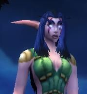

Les Terres de Kirin Tor
Melugaia
Points : 10

Joué par :
[ Information masquée ]
Age : approximativement 10'000 ans
Lieu de naisance : Sous un arbre non loin du Mont Hyjal
Signe de naissance : inconnu
Sexe : Femme
Race : Elfe
Faction : Alliance
Formation : Druide
Niveau : 48
Guilde : Confrérie d'Ixora (la)
Artisanat 1 : Couturier
Artisanat 2 : Dépeceur
Envoyer un MP
Informations hrp : Description rapide :
Physique : Elfe à la peau claire. Des longs cheveux marines balayent ses épaules le plus souvent nu. Deux marques coupent ses joues. Ces marques changent de couleurs suivants la période de la journée. Bordeaux le jour et marines la nuit. Courbes très féminines envoûtantes.
Caractères : Femme-enfant, elle semble souvent insouciante aux gens. Peu même apparaître comme stupide aux yeux des gens qui ne la connaissent pas bien. Ne sens souvent pas concernés par les affaires sociales ou politiques. Seule la vie compte à ses yeux. Souhaite trouver l'équilibre entre tous les peuples. serviable, chaleureuse (parfois trop) caractérielle, légèrement manipulatrice, goût pour les risques inconsidérés, aventurière, timide (surtout face aux autres druides) , ...
Description : Ma mère, prêtresse d'Elune, s'appelait Uialithil. Elle était une des nombreuses messagères de Tyrande. Sa profession lui demandait d'effectuer de longs voyages, mais en général elle apportait surtout des messages de Tyrande aux Biens-nés.
Un jour, sur le chemin dun village Queldorei, son tigre s'affola pour une raison inconnue et elle fit une lourde chute. Elle fut pris en charge par les Bien-nés durant sa convalescence
Quelque temps plus tard, elle revint au temple. Un matin, elle fut pris de nausée en plein culte et du sen aller. Tout le monde comprit.
Au fur et à mesure que son ventre sarrondissait, les critiques se faisaient de plus en plus virulentes. « Une prêtresse enceinte et pas mariée ! » « Quelle honte ! » « En plus, avec tout le temps quelle a pensé chez EUX, cest sûrement un des LEUR qui la engrossé ». Les mots se firent tellement mauvais que ma mère décida de se retirer dans un petit village pour se « cacher ».
Mais le chemin était long et pénible pour une femme enceinte. Aussi pénible quelle me mit au monde, seule, en pleine nature.
Elle est arrivé à un village et tout le monde la accueilli chaleureusement. Elle leur a raconté que son époux, un brave chasseur Kaldorei, avait péri lors d'un combat.
Je grandis vite et entourée damour dans ce petit village. Les enfants y étaient joyeux et tout le monde semblait heureux. Je passais mes journées à jouer avec les autres enfants jusquà ce que ma mère mappelle pour les repas. Je la vois encore sur le pas de la porte. Ses longs cheveux argentés cascadaient sur ses épaules. Ses yeux me souriaient. Elle me soulevait du sol et me portait à ses lèvres douces pour me couvrir de baisers. Elle me portait jusquà la table et souvent elle me regardait manger les bras sous le menton comme une enfant émerveillée écoutant une histoire. De temps en temps, elle relevait mes cheveux qui marrivaient devant le visage et de ses longs doigts délicats caressaient mon menton en me disant : « je taime mon trésor, tu es si unique »
Mes affinités et ma connexion avec la nature sont apparues très tôt. Je communiquais avec les arbres et passais de plus en plus de temps seule en forêt. Ma mère sest dabord insurgée contre mes ballades nocturnes et solitaires puis elle a cessé de crainte de me voir menfuir. Je devins de plus en plus sauvage et cessai bientôt toutes relations avec les autres enfants. Je ne dormais pratiquement plus à lintérieur mais à même la terre ou sur une branche darbre. Le seul contact civilisé que je gardais était celui de ma mère. Je revenais régulièrement la voir. Elle me coiffait et mhabillait de neuf. Elle sénervait de voir mon ancienne robe usée, en lambeau. Elle membrassait et me faisait promettre de ne plus partir. Je restais quelques jours, semaines ou mois et je repartais à nouveau dès que lappel de la forêt se faisait trop fort.
Javais remarqué quenviron une fois par mois, ma mère était plus joyeuse que coutume. Elle faisait des gâteaux et passait la journée à chantonner, à changer mille fois de tenues. Intriguée par son manège, je me camouflais parmi la végétation autour de la maison. Je restais là pendant toute la journée sans bouger à lobserver. À la tombée de la nuit, une ombre sapprocha de la maison et entra. Ne ressentant pas de danger, je ne bougeai pas. Au petit matin, lombre ressortit de la maison.
Le mois suivant, je retentai lexpérience. Mais cette fois-ci je me cachai bien plus près de la maison pour mieux distinguer et comprendre les paroles échangées. Le soir venu, un elfe sapprocha de la maison et entonna une douce chanson, la même que ma mère me chantait pour mendormir Ma mère lui ouvrit la porte et se jeta à son cou et il lembrassa.
Cet événement nest jamais sorti de mon esprit. Ma mère avait donc un amant !
Furieuse, triste et complètement perdue, je décidais den avoir le cur net. Ma mère ne pouvait pas avoir oublié mon père si vite. Je sortis de ma cachette et entra dans la maison. Les rires se turent soudain et lair devint pesant. Lelfe posa ses yeux sur moi et commenca à me parler dune voix douce puis plus rien ce qui ensuite se passa, je nen ai pas gardé souvenir ou bien je ne men souviens pas encore
Je méveillai au pied de Nordassil. Quelle splendeur ! Les vibrations quil émettait me maintenaient dans une douce somnolence. Je me sentais si bien ! Ma mère remettait mes couvertures en place. Le sol, les murs, le plafond et tous les meubles de la pièce diffusaient une lumière immaculée. Ma mère caressa mon front et avant que je puisse dire quoique ce soit, elle posa un doigt sur mes lèvres en me chuchotant de rester tranquille, que les réponses viendraient.
Je me baladais au pied de lArbre-Monde, des druides menseignant comment maîtriser mes dons lorsque ma mère accompagnée dun maître-druide vint me parler de cette nuit : Un de mes dons druidiques, la transformation en félin, mavait emporté dans sa sauvagerie.
Mes griffes avaient alors frappé cet elfe et ma mère de toutes la fureur et la rage dont je pouvais faire preuve. Je regardais ma mère des larmes amères coulant sur mes joues et elle me souriait. Comment pouvait-elle me sourire et me regarder avec tant damour après que je lai attaqué ? Elle mexpliqua quElune lui avait donné la force de créer des boucliers énergétiques sur elle et son ami et que je navais fait que peu de dégâts sur eux. Je métais alors enfui dans la forêt répandant le sang et la mort sur mon passage. La traque dura plusieurs mois et seuls deux druides avaient su me calmer. Je les ai ensuite suivis docilement jusquici où lon mavait soigné. Lesprit du Chat ne mavait quitté que depuis quelques jours.
Le maître-druide mexpliqua alors que javais plus de souvenir de cette période et que je navais pu me contrôler par faute dentraînement et denseignement. Je pouvais rester au pied de Nordassil pour me perfectionner et rejoindre les autres druides dans leur communion avec la nature. Jaccepta avec plaisir dautant plus que javais besoin de contact avec mes semblables.
Ma formation sétala sur des années. Ma maîtrise de mes dons acquises au minimum, je puis repartir sous ma forme féline vadrouiller dans les forêts. Je revenais régulièrement au pied de notre cher Nordassil faire un rapport à mon maître de ce que javais appris.
Ma mère sétait à nouveau installée au temple et avait repris son rôle de messagère. Je la voyais souvent. Elle respirait le bonheur retrouvé. Jétais heureuse pour elle. Je savais que cétait grâce à cet elfe. Même si je ne cautionnais pas quelle aime un autre que mon père, jétais tellement heureuse pour elle.
Les Queldorei décidèrent de partir sinstaller loin de nous les Kaldorei et le sourire de ma mère seffaça à tout jamais. Ses yeux éteints ne sallumaient quen ma présence. Je cessai donc mes randonnées et resta longtemps auprès delle. Elle passait la plupart de son temps à écrire ou à me regarder. Son amour devint vite étouffant. Elle me suivait partout et parlait de choses étranges. Ce cirque dura longtemps et je dus prévenir une prêtresse pour soigner son esprit. Celle-ci me dit que ma présence devenait dur à supporter pour elle car je ressemblais trop à mon père que je ferais mieux de ne plus voir ma mère pendant de nombreuses années pour préserver sa santé mentale.
Cet événement coïncide avec le rappel de la promesse des druides de sendormir pour parcourir le rêve de Ysera ce que je fis.
Je me suis réveillée au début de lère du renouveau. Javais malheureusement oublié beaucoup de chose sur ma vie davant. Au départ, je croyais que Teldrassil était Nordassil et je ne comprenais pas la controverse que suscitait le fait de lavoir planté. Cest tout dire !
Je me souvenais donc de mon nom et de celui de ma mère et quelle était prêtresse. Je me rendis donc au temple dElune à Darnassus cette nouvelle cité. Là-bas, je demandais à tout le monde sil connaissait une Uialithil mais personne ne savait qui elle était. Cétait impossible. Je demandai alors depuis quand les druides sétaient endormis et la réponse me mit en état de choc. Je me rendis alors compte de la jeunesse des elfes qui mentouraient et de mon propre âge. Je venais de passer 10 fois plus de temps à dormir quà vivre ! Et qui plus est je suis mortelle à présent ! La colère commença à me ronger et je quittai donc le temple sur le champs.
J'appris que j'avais un soeur et que ma Mère avait succombé des suites d'une maladie. Ma demi-soeur, car nous n'avons pas le même, était furieuse. J'avais abandonné Mère et elle était morte pour moi. Plus jamais je ne la revis et je crois que c'est mieux ainsi.
Troisième Ère [5]
Lune de la Force
Décade du Panda
Décade du Gorille
Décade de l'Ours
Lune d'Agilité [2]
Décade du Tigre
Décade du Singe [1]
Papillon
Je faisais les cents pas en attendant Telenil. L'air frais du parc de Stromwind me donnait envie de jouer quelques tours à ma manière aux humains. Rien de méchant. J'appelai donc l'esprit de Chat qui prit possession de mon corps. Je le laissais me guider et m'envahir totalement.
J'humais l'air à la recherche d'une proie. Rien d'intéressant. Il faut dire que la semaine, le parc est désertique. Un petit papillon blanc passa sous ma truffe et monta rapidement dans le ciel. Je me léchai les babines et me ramassa sur mes pattes arrières. La puissance de mes pattes me fit décoller sur quelques mètres, je chassai Chat en vol et fit de mes doigts une cage pour le papillon. J'atterris légèrement sur l'herbe et porta mes mains à la hauteur de mes yeux. Le papillon voletait entre mes mains. Je lui chuchotai quelques mots et ouvrit mes mains. Le papillon vit se poser sur le bout de mon nez. Je grimaçai pour le regarder et souris.
Il se tenait devant moi, il riait. "Tu es folle, ma belle", me dit-il. Je posa mon regard enfantin sur lui et secoua la tête "Mais noooon". Le papillion prit son envol, je le regardai un instant, tâche blanche dans le ciel, éclatai de rire et courus me jeter dans les bras de mon aimé et couvrit son visage de baisers. Il m'avait tellement manqué.
Il me sourit et m'embrassa longuement puis il m'interrogea sur ma présence à cet endroit.
Je lui volai un petit baiser et lui expliqua que Telenil n'était pas venu à notre entretien de cette semaine et que je me faisais un peu de souci pour lui. Il me prit par la main, me rassura et me chuchota à l'oreille "Viens je t'emmène mon elfe, allons dans notre cachette" Je rougis.
Je m'éveilla le lendemain, blottie contre un amas de couverture. Seule son odeur flottait encore dans la pièce ainsi qu'un petit mot sur mes vêtements "Je t'aime" .
Je m'enroula dans le drap et alla jusqu'au balcon. Le soleil se levait en m'éblouissant, la brise marine soulevait mes cheveux. Je lança un baiser à l'horizon : "Moi aussi, je t'aime mon guerrier, reviens vite".
Décade du Faucon [1]
Feuille
Ironforge, cette ville métouffe et me fascine. Ce soir, la place était bondée. Trop de monde, des cris, des langues différentes, des gens qui courent, qui rient. Débordement de vie. Ils parlent de guerre, de dragons à tuer, des ressources à prendre. Personne ne sémerveille plus devant la splendeur de Mère. Javais envie dun endroit calme ou la nature règne encore. Une incantation plus tard et je me retrouvais à Reflet-de-Lune.
Une légère brise caressait mon visage. Une douce odeur de feuilles humides régnait. La sérénité du lieu me drapait, menveloppait. Je mappuyai contre un arbre, lenlaçai. Son énergie semblait passée en moi. Je me mis dos à larbre, ma tête penchée pour voir la canopée de larbre. La lumière de la lune filtrait entre les feuilles. Comme cette nuit-là. La dernière nuit avant le Rêve. La dernière de ma première vie.
Je me tenais contre son torse. Il dégageait une aura de puissance, de force tranquille. Il caressait mes cheveux. Il me parlait de sa voix douce. Son nom reste voilé mais son image, sa présence ont réapparu dans mon esprit en même temps que la lune entre les feuilles.
Sa barbe frottait le bout de mon nez. Ça me chatouillait. Je lui souriais tristement, je ne voulais pas le quitter. Il me rendit mon sourire et membrassa. Des frissons me parcouraient. Je lembrassai à mon tour et glissa à son oreille des tendres « Je taime ». Il me serra plus fort contre lui. Mon cur battait à mes tempes. Un désir étrange, nouveau naissait dans celui-ci. Je voulais être avec lui, toute ma vie. « Ma druide, ma petite tigresse » ses mots me berçaient et méveillait en même temps. Je voulais sentir sa peau sous mes doigts dans un désir quasi obsessionnel. Je rougis, il me regardait en souriant. Ses lèvres rencontrèrent à nouveau les miennes. Nos corps ne parlèrent plus que le langage de lAmour. Je me souviens à présent de chaque geste, chaque souffle, chaque regard
Le soleil commença à se lever. Je le voyais à travers le voile de mes cheveux. Il était déjà levé, debout entièrement nu. Le soleil jouait sur sa peau douce, dans sa barbe la faisant resplendir de mille couleurs. Soudain il me souleva et me porta jusquau lac. Le froid mordait ma peau, mais la chaleur de ses bras, de son corps contre le mien, me réchauffa vite. Leau se fit aussi caressante que ses mains, ses lèvres. Nous nous sommes aimé une dernière fois.
Puis, lappel des druides raisonna. Il était temps. Les préparatifs étaient terminés. Les prêtresses avaient prié Elune pour nous protéger sur les Chemins éthérés. Nous prîmes nos places pour le Grand Sommeil. Il me lança un baiser avant de rejoindre son rang. Le vent me porta son murmure « Nous nous retrouverons, ma douce ». Mon amie me rejoint et me prit par la main mentraînant loin de lui. Je revêtis lhabit de cérémonie. Elle coiffait tendrement mes cheveux quand une jeune feuille en tomba. Elle me sourit, me prit dans ses bras. « Il est temps à présent ». La promesse saccomplissait. Je mendormis.
Je dus rester un long moment le regard dans le vague avant que le vent jouant avec les feuilles mortes me ramène au présent. Des larmes coulaient le long de mes joues. Comment avais-je pu loublier ? Mon premier Amour, mon druide
Lune de l'Esprit [3]
Décade de la Chouette
Décade de la Baleine
Décade du Lapin [3]
Pluie
Melugaia se promène aux abords de l'université attendant avec une certaine impatience la rentrée. Son esprit est las et son coeur en peine.Rêve pluvieux
Apercevant le saule, elle ne peut s'empêcher de se diriger vers lui. L'énergie de l'arbre l'attire inexorablement. Elle appuie son corps contre l'arbre et l'ensert tendrement comme elle le ferait de son amant.
L'arbre semble l'apaiser, la réconforter.
Elle reste ainsi alors que la pluie commence à nourrir la terre. L'eau plaque ses longs cheveux contre sa peau. Ses paupières fermées dans une sorte de douce transe, elle ressemble à une toute jeune elfe naïve.
La pluie ruissele sur son corps ainsi que ses soucis. L'arbre la baigne de son énergie bienfaitrice.
Soudain, une branche craque. Des bruits de pas qui se rapprochent...
Des bruits de pas qui se rapprochent, une silhouette sombre et massive qui se dessine entre les arbres de la Forêt, linquiétude commençait à menvahir.Pluie (suite)
Lénergie de la silhouette se propageait peu à peu dans lair, bien plus puissante que la mienne. Je mécartais de larbre et saisit mon bâton en ne détachant pas mon regard de la silhouette. Son énergie me toucha de plein fouet me faisant reculer de quelques pas. Je narrivais pas à déterminer sa nature. Ami ou Ennemi, la silhouette ne voulait pas que je le sache.
Un éclair illumina le ciel. Un ours.
Aucune trace de corruption sur son corps. Je ne pouvais donc pas risquer un combat qui me serait peut-être mortel.
Je commençai donc le rituel dapaisement des créatures. Je fermai les yeux un instant me laissant parcourir par la puissance tranquille de Mère tandis que jexécutai des mouvements avec mon bâton. Jappelais de mon esprit celui de lours mais je ne le trouvais plus. Disparu.
Les gouttes de pluie sécrasaient plus lourdement sur le sol.
Jouvris les yeux. Un elfe. Grand et puissant. Cétait donc un druide. Il suivait à coup sûr la voie sauvage.
Un éclair déchira à nouveau la nuit.
Un sourire étrange sur son visage. Il me fixait.
- Melugaia
Cette voix, je la connais.
- Tu es là Melugaia Fleur de feu
Fleur de feu ? Ces mots éveillent en moi des sentiments contradictoires.
- Sale bâtarde
Je serrai plus fort mon bâton et rassembla mon courage. Je lui souris.
- Qui es-tu ?
- Tu le sais bien, hybride. Sa voix crachait ses mots avec un énorme dégoût.
Je le fixai. Il savait donc. Je continuais de lui sourire. Il commença à sapprocher. Il était trop prêt. Javais peur.
Rapidement je retourna mon bâton et le planta dans le sol. Des racines enserrent le druide.
- Reste où tu es
- Tu crois vraiment que ça va me retenir longtemps ?
- Dis moi qui tu es
La voix de Guépard me parlait. « Vite appelle moi et fuis »
Le druide lança un éclat lunaire sur les racines qui brûlèrent. Il continuait à marcher vers moi.
Je refis appel aux racines qui lenserrent à nouveau.
- Sale Bien-née, tu ne mérites pas dêtre druide. Tu devrais être morte.
La colère et la tristesse menvahissait de plus en plus. Javais fait preuve de dévouement envers les Kaldorei. Je suis à moitié Kaldorei. Pourquoi ne pas maccepter ? Rejetée par les deux cousins ennemis.
- Qui es-tu pour déterminer si oui ou non je mérite la vie ?
- Je suis un vrai Kaldorei. Il bombait le torse rempli de suffisance.
- Ne crois-tu pas que si Mère a jugé bon de me confier mes talents, cest quElle a confiance en moi ?
- Ne blasphème pas je ne suis pas comme Malfurion aussi faible et crédule.
Mes poings se serrèrent. Je cessai de sourire
- Qui es-tu pour critiquer le Maître ?
Il rit. Son rire était sinistre et mauvais.
- Tu vas mourir sale bâtarde. Je vais libérer le monde de ta présence abominable. Dire que ta mère a préféré ce Bien-Né à moi. Elle mérite la mort elle aussi Sauf si
- Ne ten prends jamais à ma mère. Criai-je.
Sans que je le veuille, de lénergie se concentrait dans ma main. Son accumulation devenait trop forte. Je déchaînai donc ma colère sur cet elfe.
Il rit plus fort et se jeta sur moi. En ours, il commença à me frapper. Je fis appel à chat. Je plantai mes griffes dans sa patte accrochée à mon flanc. Il rugit et recula sous le coup de la surprise.
- La petite bâtarde se défend Il lèche le sang coulant de sa patte.
Je ne tiendrais pas longtemps De laide Chat poussa un long hurlement pour rameuter un éventuel secours.
- Tu crois vraiment que quelquun va vouloir taider, abomination.
Je me jetai sur lui. Chat se déchaînait. Il mordait le cuir épais de lours en y laissant que des petites morsures peu profondes. Mon flanc gauche était complètement ouvert. Jallais mourir. Je vacillai puis le griffa en plein visage.
- Salope Tu mas défiguré. Il riait dun rire de fou. Il se toucha longuement le visage et une lumière verte guérie la griffure.
Il avait reprit sa forme elfique et domina mon corps de sa hauteur. Chat mavait quitté. Je ne pouvais plus bouger. Mon corps métait que douleur. Mon sang se répandait sur le sol et la pluie diluait ma vie.
-Cest dommage de détruire un si joli corps. Lesprit est une abomination mais le corps, une merveille.
Il sassit auprès de mon corps. Il leffleura. Je voulais hurler mais seul un gragouilli de sang sortait de ma bouche. Mes yeux le suppliaient de me tuer. Je ne voulais pas pas ça.
Il déchira le reste de mes vêtements. Je ne pouvais rien faire. Prisonnière de mon propre corps. Un éclair. La vie me quittait.
Je flottais sur mon corps. Je prenais de la hauteur. Une lumière blanche mattirait, je volai vers elle. « Viens mon enfant » Mère la Mère unique, elle me tendait ses bras réconfortants.
Des bruits de lutte. Je détournais à nouveau mon regard de la chaleur de Mère. Un félin se battait avec lelfe. Le félin le tua dun coup de patte en travers de la gorge. Le sang jaillit. Lelfe sécroula. Mort.
Le Félin sapprocha de mon corps, lécha ma joue sans vie, poussa un hurlement et fit place à un elfe.
- Reste avec moi petite sur.
Il posa une graine sur mon corps et se lança dans une incantation. Mon esprit fut à nouveau aspiré par mon corps.
Je pris une bouffée dair. La pluie était plus fine. Lair avait une odeur de feuilles mouillées.
Jouvris les yeux. Il sourit et posa son doigt sur mes lèvres.
- Chut plus tard.
Il me souleva et memporta. La pluie cessa. Je mendormi dans ses bras réconfortants.
Soudain, une branche craque. Des bruits de pas qui se rapprochent...
Melugaia s'est endormi sur le sol entre les branches du saule. Insouciante. Elle ouvre les yeux, s'étire et touche son côté. Elle sourit.
Elle se lève et râle un peu à cause de ses vêtements boueux et trempés.
Un Chat se dirige vers elle. Elle s'assied à nouveau. Il arrive et lui lèche la joue. Elle rit.
Quatrième Ère [14]
Lune de la Force [5]
Décade du Panda [4]
Attirance naturelle
Il mavait abordé un jour à Gadzetzan. Mon frère de bâton Javais déjà eu de la peine à détacher mon regard du sien. Un druide ours son aura était bienveillante et un peu triste comme si un fardeau pesait sur ses épaules. Il était jeune trop jeune pour un tel poids, trop jeune pour moi.Premier amour?
Pourtant je pensais souvent à lui. Je navais pas eu loccasion de lui reparler depuis ce jour. Javais tellement envie de le revoir, de lui parler, de me blottir contre lui et doublier qui je suis, qui jétais et être simplement.
La réunion druidique organisée avec Ilunagar était une excellente opportunité de le revoir.
Il avait répondu à mon appel. Il était là. Présence amie parmi tous ces druides qui me sont inconnus. Il mapportait du réconfort et me réchauffait le cur de ses sourires.
Il dut partir plus vite, jen fus triste mais le tumulte de la réunion emporta vite ma peine.
Je lui écris une lettre lui demandant de nous revoir je suis moi-même surprise de mon empressement.
Puis ce soir-là à Reflet de Lune nous avons parlé, nous avons bu. Sûrement plus que de raison pour calmer mes appréhensions, pour oublier mon fiancé. Je naurais pas dû.
Son corps éveillait le mien de sa simple présence. Je le dévorai du regard. Par Elune quil est séduisant. Javais envie de goûter à ses lèvres, à sa peau contre la mienne. Je devais détourner mon regard de lui pour garder la maîtrise de moi. Mes joues empourprées.
Je lui racontai une partie de mon histoire. Il me traita de Grand-mère gentiment. Je le frappais gentiment de mes poings. On aurait dit deux enfants qui jouent, qui se cherchent.
Il moffrit un présent. Je navais pas lhabitude de ce genre dattention. Il est magnifique. Il lavait fait de ses mains. Je lessayai, il mallait parfaitement. Jhésitai un instant avant de lui montrer son uvre sur moi. Cétait très osé. Un harnais du Grand Ours. Il avait su ladapter à mon corps sans en connaître les mesures.
Il rougit en me voyant.
Chat chuchotait à mon oreille « Vas-y. Vos corps sappellent. Tu le vois bien un elfe, ce nest pas comme cet humain que tu as pris pour fiancé » Je le repoussais. Je ne devais pas. Pourtant plus, je le regardai, plus je savais que je ne résisterai pas longtemps à son charme sauvage.
Nous avons continué de parler longtemps, puis nous nous sommes tu. Il sest allongé et a posé la tête sur mes genoux. Nous contemplions les étoiles. Leur clarté soulignait le contour de ses muscles. Je ne pouvais mempêcher de le regarder et de jouer doucement avec ses cheveux.
Il se faisait tard, le sommeil me gagnait un peu. Je mallongeai à mon tour sur ses cuisses. Sa peau était si douce. Je frottais ma joue contre elle. Le grog me désinhibait. Je lui caressai doucement le dos. Il fit glisser ses mains le long de mes flancs. Des frissons me parcourent. Je le poussai doucement pour quil se couche et me blottis contre son torse. Je mendormis rapidement à cause du grog.
Le lendemain, je méveillai seule et un peu triste. Je naurais pas du. Mais quest-ce que je me sens bien auprès de lui
Corps perdus qui se cherchent, âmes altérés de deux êtres, dans la nuit enchantée et étoilée qui, enfin, se réunissent à nouveau.Attirance naturelle - Baie au Butin
Cette soirée là, ses efforts nont pas été vains. Cette fois-ci, je suis sûre. Il a été cet elfe. Mon amour. Le tout premier de ma vie.
Sa douleur je soignerai. Même si mon cur et mon corps de femme sest éloignée de ses bras.
A jamais mon cur de jeune druide lui restera fidèle.
Jai mis du temps à me rappeler de lui. Parcourir le Rêve de Ysera a eu bien des répercussions Une partie de moi sy est perdu. Je commence à me retrouver jai peur peur des conséquences sur ma vie actuelle. Comment va le prendre mon fiancé ?
Mon cur se perd se perd dans mes souvenirs, dans son regard le regard tendre de mon premier amour
Perdue qui suis-je à présent et qui est-il ?
Que va-til se passer à présent si mon intuition se révèle véridique ?
Que de questions en suspens il faut que nous nous revoyons
Mille fois jai changé de tenue. Je voulais être séduisante pour le revoir. Mon frère de bâton. Je prononçai doucement son nom en chantonnant. Le cur léger malgré toutes mes questions. Javais tellement hâte de le revoir. Sa présence bienveillante auprès de moi, juste une nuit dans ses bras. Moment de tendresse innocent.Attirance naturelle : Baie-au-Butin (suite)
Sur le griffon je me changeais encore des dizaines de fois au risque de tomber du griffon. Je ris de ma propre impatience chassant mes remords du même coups.
Baie-au-Butin. Ville aux milles senteurs, métissage des cultures et des races. Les gobelins commercent indifféremment avec lAlliance ou la Horde Je me sens bien à cet endroit.
Mon cur battait la chamade. Javais un peu trop chaud. Mes joues rougissaient en limaginant. Je laissais Chat menvahir pour apprécier plus pleinement le caléidoscope dodeurs. Une fragrance subtile attira mon attention. Il était déjà là.
Je me baladais parmi les passants, réfrénant mon envie de courir pour lui sauter au cou. Chat voulait jouer et pour une fois nous étions entièrement daccord. Mon estomac papillonnait. Etait-ce la faim ou lappréhension de le retrouver ?
Je me tenais face à lui. Chat me cachait à son regard. Il sagenouilla devant moi, caressa ma fourrure. « Que fais-tu ici petite panthère ? » Je miaulai, me frottai contre ses jambes. « Tu as faim ? ». Un sourire illuminait son visage. Jacquiesçai en miaulant. Il séloigna et revint avec un gros poisson que Chat avala dune seule bouchée. Je miaulai encore en me frottant contre ses genoux. Il caressa mon flanc, je ronronnais. Un moment sécoula encore. Je méloignai un peu et repris mon apparence elfique en riant.
Ma tenue semblait lui plaire. Son regard se perdit un instant dans mon décolleté. Je rougis en surprenant son regard. Le rouge lui montait également aux joues. Je lui souris.
« Jolie tenue, je ne tavais encore pas vu en smoking. Ça te va très bien mais tu dois avoir encore un peu chaud, non ? » Il rit et avoua que oui. Je lui conseillai de se changer, peut-être parce que je préfère le voir dans sa tenue habituelle Nous discutâmes un moment sur le pont devant la banque. Frôlements, regards pleins de sous-entendus, Elune, combien de temps vais-je lui résister ?
Je pris sa main et lentraînai dans la taverne. « Viens boire un grog » Je ris. « Il y a des chambres en haut pour te changer » Il me regarda dun air interrogatif. Je repris sa main « Viens, je te montre » Je laccompagnai jusquaux chambres à létage et entrai dans la première. « Ici tu seras tranquille pour te changer » je me retournai en même temps. Je me retrouvai face à face avec lui, je levai mon regard vers le sien doucement. Un court instant qui me sembla une éternité. Je me dirigeai soudain vers la sortie. « Je tattends en bas ». Mes joues empourprées je me dépêchai daller chercher des grogs chez laubergiste. Jen avalai une rapidement au comptoir pour rafraîchir mes idées. Mais quest-ce qui me prenait ?
Je remontai vers létage. Il mattendait en haut des marches. Sa tenue habituelle, dévoilant son anatomie si parfaite. Le moindre de ses muscles redessinés par le cuir. Je ne pus mempêcher de rougir. Nous avons parlé durant un moment mais la chaleur de lauberge, nous invitait à aller prendre un bain. Je le suivis. Contemplant à nouveau ses larges épaules sur lesquelles je voulais poser ma tête, son dos puissant, ses reins que javais envie de sentir senflammer sous mes doigts, ses jolies fesses, ses cuisses si douces, Elune, je devais détourner le regard, jaurais dû men aller. Mais je le fis pas je le suivais toujours vermeille et souriant pour tenter de masquer mon émoi.
Dun regard, nous fîmes appel à lesprit du Guépard. Nous nous lançâmes dans une course folle, esquivant de notre mieux les nagas qui avaient pris possessions de la place (étrange, il me semblait les avoir éradiqués à cet endroit). Un dentre eux réussit à me griffer. Un mince filet de sang coulait le long de ma patte blessée.
Nous arrivâmes à une plage discrète. Il lècha doucement ma griffure, je lui fis comprendre que ça allait. Nous nous approchions de leau claire. Il hésita. Guépard naime pas beaucoup deau. Je léclabousai dun coup de patte. Guépard sen alla et me laissa le regarder en riant.
- Tu viens ?
- Mais je peux pas me baigner nue
Jétais écarlate et lui aussi
- Jai une idée, je vais utiliser mon tabard comme robe de bain comme ça, cela restera honnorable. Allé.. Tourne-toi que je puisse me déshabiller.
Cest bon ? tu es tourné ? Tu triches pas, hein ?
Je fis glisser ma robe à mes pieds. Ma peau nue luisait sous la lumière de la lune. Je jetai un coup dil vers lui. Jhésitai javais envie de me jeter dans ses bras. Je me retournai à nouveau et enfilai mon tabard.
Je lui pris la main et lentraînai dans leau. La fraîcheur de leau était agréable. Les étoiles et la lune caressait ma peau et la sienne de leur clarté. Je me jetai dans ses bras et essayai de le faire couler. Il attrapa ma jambe et me tira sous leau. Je remontai rapidement à la surface et recrachai leau avalée. Je tapotai son torse de mes poings en le traitant de méchant. Je riai Quel délice dêtre avec lui. Nous avons jouer pendant des heures à nous courir après.
A force de jouer, de nous frôler, mon corps devint presque douleureux de désirs. Elune, comment peut-il être aussi séduisant ? Il mamena à une chute deau. Il me dévorait du regard en rougissant. La cascade coulait, glacée, sur nos corps brûlants. Je maccrochai à son cou et mappuyai contre son torse, bercée par ses bras puissants. Mon druide-ours. Jétais envahie par une douce langueur. Il dessina dun doigt le motif de mon tabard.
- Quest-ce que ça signifie ?
- Cest une Ixora, une fleur de la jungle Elle signifie la passion.
Jaimais sentir sa main douce sur mon ventre. Moment de tendresse. Nos lèvres se rencontrèrent pour la première fois.
Javais oublié toute raison pour simplement vivre ce moment exquis avec lui. Elune, mais pourquoi suis-je aussi éprise de lui ?
Décade du Gorille
Décade de l'Ours [1]
Lune d'Agilité [9]
Décade du Tigre [2]
Attirances naturelles : Prise de conscience
Darkfurion et Diamant vont se marier ! Quelle surprenante nouvelle ! Je navais rien vu rien entendu ni même pressenti Elune, je me suis éloignée de ma guilde. Je me suis centrée sur ma petite personne Suis-je si égoïste ?Mariages...
A la taverne, jai bu à leur santé, mal à laise, la tête remplie de questions sur mon engagement envers mes compagnons. Ils ont lair bien ensemble. Je leur souriais cachant mon trouble.
Puis cette odeur familière fit son apparition. Cette odeur si suave, si désirée. Une panthère sassit auprès de moi. Je souriais et caressai le félin. Celui-ci me léchait le visage et se frottait à moi. Je lui offris un bol de grog et continuai à le caresser et à me serrer contre lui. Il séclipsa.
Je pris congé de mes compagnons, oubliant toutes mes questions et me redis à Reflet de lune. Chat menvahit et je le laissai me guider vers son compagnon de jeu.
Ronde de miaulements joueurs, effleurements tendres et complices, nos esprits félins se délectaient de ses jeux mais je ne voulais pas passé ma soirée à lui courir après. Je voulais lui parler le toucher le sentir et le goûter.
Je lui souris, assise sur le sol appuyée sur mes bras. Il sassit et longtemps nous discutâmes Nous avons parlé du hasard qui nous avait fait nous rencontré à Gadgetzan. De nos bâtons si ressemblants qui avaient permis à notre relation de débuter. La malchance de mon fiancé qui me lavait offert et puis joueuse je lui ai dit que mon cur avait trouvé un nouveau refuge. Un refuge si tendre si évident si naturel.
Je lui parlai de lui en faisant comme si cétait un autre. Il entra dans mon jeu puis il me les dit, ces simples mots qui ont fait fondre mon cur : Je taime.
Je lembrassai tendrement puis avec fougue. La passion me dévorait je laimais je laime.
Ce soir, jai assisté à deux mariages. Deux unions en une même soirée en ces temps troublés, est-ce une preuve que la vie, lamour restent tout puissants malgré ladversité ? Où est-ce seulement une preuve de laveuglement des gens face aux multiples dangers qui nous menacent ? Je penche pour la première solution mais je sais que malheureusement ce nest de loin pas la théorie la mieux acceptée
Deux mariages, deux sons de cloches
Le mariage de deux personnes qui me sont inconnus une prêtresse et un mage au vue de son aura... Un homme et une femme je nétais pas personnellement invité mais comme il sagit dune membre dune guilde avec laquelle nous sommes en pourparler dAlliance je devais faire acte de présence Lentrée des futurs mariés dans la cathédrales de Stromwind rassemblement de pleins de gens dans leur plus beau atour puis soudain le drame Le marié savère déjà marié. Le ton augmenta grandement puis la mariée déçue et bafouée sen alla rapidement. Pauvre femme je la plains tellement et même temps je lenvie elle a eu la chance de sapercevoir que cet amour nétait pas sincère avant dunir son cur à cet homme.
Puis le mariage de deux curs un mariage simple sans tout le folklore inutile lunion de deux âmes, deux splendides femmes, Floriana et Enja. Le simple choix du lieu montrait la pureté de leur esprit chacun de leur regard, de leur geste montrait leur amour. Rien ne devrait pouvoir se mettre sur leur chemin. QuElune les bénisse et les guide dans leur vie commune.
Une cérémonie émouvante et puis Il était là. Mon Phalenopsis, mon tendre frère de bâton. Chacun dans lAssemblée semblait concerné et touché par lamour dEnja et Floriana. Aucune indifférence rien que des sourires émus et quelques larmes de joie cette fois-ci.
Mon cur auprès de moi, je ne souriais pas seulement heureuse pour elles mais heureuse pour moi. Quand il est là, je suis simplement en joie simplement moi.
Notre relation en est à ses débuts et malgré que je sache que lamour na plus rien déternel il ne dure quun temps je ne puis mimaginer vivre sans lui.
Elune, tu mas tellement donné de joie, jai peur que tu ne me lenlèves et que mon cur erre à nouveau. Cette peur.. je ne lai jamais vraiment ressenti avant est-ce le signe que jattendais ? Est-ce le signe que cest Lui ? Celui avec qui je pourrais réaliser mon rêve ?
Pourtant au vue de ses deux mariages je ne peux mempêcher de me demander si les hommes et les femmes sont réellement destinés à vivre ensemble et à saimer. Pourquoi tant dunions mixtes finissent si mal, alors que les mariages entre femmes durent et apportent plus de joie à tous ?
Est-ce que la nature se serait trompée sur ce fait ? Ou devons-nous faire comme la plupart des espèces vivre en communautés séparées et nous retrouver pour procréer ? Est-ce que la chair déforme à ce point les sentiments entre les sexes ? Non je ne peux croire à cette idée je respecte les choix de tous mais comment pourrais-je vivre loin de mon cur ?
On dit que lamour na pas de sexe, ni de race et quIl unit les âmes indépendamment des races ou du genre. A cela je crois
Mère nous a réuni lui et moi que ça soit pour la vie ou pour un temps seulement. Ma passion pour lui me consume. Jaime cette chaleur dévorante. Je men délecte. Rien dautre ne compte que lui.
Je fis glisser mes doigts dans ses cheveux et embrassai ses lèvres. Je mallongeai auprès de lui. Oui. Je dois vivre simplement et ne plus me poser ces questions. Profiter de linstant présent.
Il entrouvrit les paupières et me regarda tendrement Je levai les yeux vers le ciel et remerciai Elune dun sourire, avant de me caler entre les bras protecteurs de mon compagnon.
Décade du Singe [6]
Etoiles
Jétais assise sur une colline surplombant de le lac dEluneAra. Chaque parcelle de mon corps et de mon âme réclamait sa présence, lui mon druide. Le seul qui fait battre mon cur. Je me sens si mal quand il nest pas là comme si lair se faisait rare ou corrompu. Rien na de saveur.Berceau de l'hiver
Oui. Même la vie perd de sa saveur quand il nest pas là pourtant je ne peux pas non plus lattacher à moi. A cette pensée, un fou rire me prend. Je mallongeai dans lherbe tendre, les yeux dans les étoiles des étoiles dans les yeux.
Ses mêmes étoiles que nous avions si longuement contemplés ensemble en silence la première nuit ou je me suis endormi dans ses bras protecteurs. Depuis ce moment précis à Gadgetzan, je lavais su. Oui. Je le savais au moment même ou mon regard sétait posé sur lui. Une attirance presque bestiale. Le sentiment de confusion, de peur presque que sa présence avait fait naître dans ma poitrine. Mon premier réflexe un rejet pur et simple. Je ne devais même pas songer à lui. Plus jamais ! Et pourtant son visage et son corps splendide moulé dans le cuir de son armure avaient hanté mes rêves et mes pensées même quand je passais mes journées avec mon fiancé.
Obsession je ne pouvais mempêcher de le chercher partout. Elune que ces moments ont été pénibles ! Cependant jen apprécie maintenant chaque nuance. Lattente peut-être est-ce qui rend si unique notre relation.
Le vent souleva ma robe. Je ris à nouveau. Je lui lançai des baisers espérant que ceux-ci se poseraient sur ses lèvres. La douce clarté des étoiles baignait mon corps. En pensée, je réorganisai celles-ci pour faire apparaître son visage. Des papillons dans le ventre. Je ressentais les mêmes tourments que les jeunes elfes amoureuses Pourtant je ne suis plus une enfant depuis bien longtemps, javais déjà connu cet émoi. Mais quelle sensation exquise de me laisser aller à ne penser que cette fois-ci il ny aurait pas de sommeil, pas de rêve, ni de guerres qui me séparait de mon cur
Le Berceau de l'hiver... cet endroit est aussi froid que mon coeur et mon corps devient brûlant quand je pense à lui.Neige
Je devais me concentrer et me faire violence pour rester assise dans là seule dans la neige. Je me répétai sans cesse : ne pas aller le rejoindre, ne pas aller le rejoindre.
Quand soudain, une violente douleur à mon épaule m'arracha un cri. Je me retournai rapidement, serrant mon bâton de toute mes forces prête à frapper. Mais il n'y avait rien, que la neige à perte de vue. Pas une seule empreinte ne venait souiller le manteau immaculé. Rien. J'étais totalement seule.
Je le vis, il avait mal. Il se tenait l'épaule. Elune mais que ce passe-t'il? Guépard m'envahit et courrut à Reflet-de-Lune.
Peut m'importe mes souvenirs si je ne peux les partager avec mon druide...
La neige me recouvrait presque totalement. Je grelottai sous son manteau blanc. Cela faisait des heures ou des jours, je ne savais plus très bien, que je restais assise à méditer dans le froid.Cérémonie
Mon corps engourdi, mes doigts figés sur lattache de la peau dours qui me protégeait, mon esprit vagabondait.
Je maudissais ce sage qui mavait conseillé de méditer dans le froid, le traitant de noms pas très elfiques... Comme lavait dit un jour, un nain de ma connaissance, je peux être aussi grossière quune marchande de poissons naine. Cette pensée marracha un petit rire douloureux.
Le reflux des vagues sur une plage de Baie-au-Butin, mon corps étendu lascivement sur le sable fin et chaud. Le soleil brûlait doucement ma peau qui rougissait légèrement. Javais chaud
Puis à nouveau la morsure du froid De la fièvre me dis-je dans un excès de conscience il faut que jaille me mettre à labri et que je me soigne puis une grande chaleur menveloppa et je sombrai dun état proche du Sommeil éthéré.
Au pied de Nordassil, la fête bat son plein. une elfe (une amie?) coiffe mes cheveux et y attache des fleurs dun rouge profond. Elles semblent sépanouir et fleurir encore plus à mon contact, illusion ? Les prières des prêtresses enchantaient lair.Le troisième éveil
Les rythmes des tambours. Le rythme de mon cur qui bat pour toi.
Une douce transe cest le jour tant attendu. Nous allons nous endormir dans un profond sommeil et ne connaître quun seul rêve La tisseuse déjà apparaît dans mon esprit embrumée ton regard plongé dans le mien pour la dernière fois Sa voix dans ma tête mon corps complètement engourdi. Je sombre
Mes yeux souvraient à nouveau. Une jeune elfe me souriait en enlevant la poussière entassé sur moi.Neige... (suite)
- Il est lheure, Dame Melugaia. Votre bain est prêt.
Je me levai prestement, complètement perdue et encore dans les limbes. Du noir devant mes yeux et le monde qui tournait.
- Attention ne vous levez pas trop vite !
Je tombai sur le sol, grimaçai et soufflai entre mes dents
- Trop tard.
Le contact frais et dur du sol me ramena plus rapidement à la réalité que toutes les remarques de la jeune elfe.
Elle mentraîna dans un dédale de corridors. Elle babillait, insupportable, me débitant des banalité sur la mode et les amours de la société elfique. Sèchement, je la coupai.
- Pourquoi ma-ton éveillée ? Où est Winterwood ?
Elle me regarda un instant interloquée et vexée, puis me répondit à toute vitesse.
- Je nen sais rien. Le cercle la décidé. Par Elune, votre robe ! Elle part en lambeau
Elle enchaina sans me laisser le temps de répondre
- Vous savez actuellement on ne porte plus le hanbok que pour les fêtes. Je vous ai choisi une robe M-A-G-N-I-F-I-Q-U-E. Elle vous ira parfaitement au teint. Elle est bleue avec des borderies en fils dor. Il faudra que je vous peigne les cheveux. Votre coiffure nest pas
- Cela suffit !
La jeune elfe protesta et devant son désarroi, je mempressai dajouter
- Vous avez certainement bien fait votre travail mais jai hâte de me débarasser de cette poussière.
Je lui sourit et elle recommenca son babillage en sautillant autour de moi.
- Cessez donc de sautiller partout vous me donnez un tournis incroyable. Laissez-moi le temps je viens de méveiller dun long sommeil Au fait, combien de temps ai-je dormi ?
- Je nen sais rien je suis navrée
Elle me sourit en guise dexcuse et me prit la main pour me guider à travers le dédale de couloir.
Nous débouchâmes enfin dans une immense pièce baignée par la lumière de la Lune. Au centre de la pièce ivoire trônait un bac dargent. Dun large bec dans une colonne se déversait de leau Entre les flacons multicolore, un large bec déversait de leau. Les reflets multicolores de leau dansaient sur les murs. Tout me semblait irréel
Je soupirai daise quand je pris place dans le bac deau chaude. Mes membres ecchymosés reprirent une teinte plus normale quand la demoiselle versa le contenu des fioles dans leau claire. Elle entreprit de me masser vigoureusement tout dabord puis plus doucement presque sensuellement. La poussière qui empéchait ma peau de respirer disparut en tourbillonnant dans le siphon .
Dans le froid du Berceau de lhiver, la fièvre me fit tourbillonner en me relevant. Je manquais plusieurs fois de tomber en regagnant le chaud rassurant dune petite grotte. Ma tête tournait tandis que je faisais de mon mieux pour créer une flamme avec les silex. Lasse et complétement fourbue, mon éclat lunaire vient frapper les brindilles et le bois que javais rassembler en prévision. Le feu illumina la pièce tandis que je menroulai dans les couvertures de laines chaudes. Le sommeil me prit à nouveau en même temps que mes visions (souvenirs ?) étranges
Décade du Faucon [1]
Epée...
Une épée planté dans un corps. Celui dun homme.
Il est encore de debout et en face de lui se tient une elfe, la grade de lépée dans la main.
Une elfe, grande avec de longs cheveux dargent. Elle est belle mais complétement terrorisée. Elle recule lentement en lâchant la grade de larme. Lhomme tombe à genou, son regard étonné se pose doucement sur lelfe, il lui murmure quelque chose : Je taime ou merci les deux peut-être lelfe tombe à genou également, un cri de désespoir le noir. Un nom dans mon esprit Tyranael, la guerrière à la natte dargent.
Lune de l'Esprit
Décade de la Chouette
Décade de la Baleine
Décade du Lapin
Cinquième Ère [1]
Lune de la Force [1]
Décade du Panda [1]
Veille
Assise sur le rebord du Puit de Lune, près du Refuge de Malfurion, la druide s'était perdue dans la contemplation d'un brin d'herbe. Son visage sans émotion trahissait la séparation entre son corps et son esprit.
Le sang rouge souillait la terre. une clameur s'élevait. Une féroce bataille se livrait. Démons... les elfes étaient submergés de toutes parts, acculés par l'invasion. Autour du puit d'éternité, les bien-nés concentraient leur puissance pour élargir le portail. Dans un coin reculé du temple, des sanglots de terreur secouaient une petite silhouette frête. La cascade de ses cheveux bleu sombre cachaient son visage.
Lumière émeraude aveuglante.
Un arbre gigantesque. Puissant et bienveillant. La sérénité de Nordrassil. Melugaia se leva et s'approcha de l'Arbre-Monde. Sous sa longue tunique, on pouvait encore apercevoir en transparence la marque. La marque du croissant de Lune et de l'Etoile à cinq branches. Symbole de la puissance de son clan. Au pied de l'Arbre, au conseil de druides, Malfurion présidait. La jeune elfe s'agenouilla et leva son regard vers le Maître.
Lumière émeraude aveuglante.
Un éclat de rire perça la nuit suivit d'un "Chut" sonore et d'autres éclats de rire. Deux jeunes elfes sortirent du sous-bois en courant. Sitôt suivi par deux mâles tout aussi rieurs.
"Mel!!! Dépêche-toi, ils vont nous rattraper!"
Un autre éclat de rire et l'elfe céda sa place à un félin.
"Tricheuse!!!"
Lumière émeraude aveuglante.
Lames brillantes, le triangle de Trois. Un livre recouvert de symboles magiques.
Tyranael souriait doucement. Son amant la couvait d'un regard tendre avant de se replonger dans sa lecture. Melugaia se leva et fit un clin d'oeil au couple avant de refermer la porte de la petite maison.
Lumière émeraude aveuglante.
Des lèvres douces virent se poser sur celles de Melugaia. Un sourire illumina son visage.
Phalenopsis la regardait tendrement et caressait sa joue.
« Ma douce, montre-moi comment parcourir le Rêve. Laisse-moi y entrer avec toi. Que puisse te protéger »
Les doigts de Phalé courraient sur les cicatrices qui zébraient les bras de la druide et son visage se figea un peu. Il n'avait pas pu la protéger. Cette Tyranael, il ne l'aimait pas.
« Promets-moi de ne pas la revoir sans que je ne sois à tes cotés... »
Lumière émeraude aveuglante.
Le corps de Phalé reposait sur le sol froid. Son visage avait perdu les couleurs de la vie, mais son coeur battait doucement sous sa poitrine, ralenti, en veille.
L'esprit de Melugaia regagna son corps et son coeur cessa de battre un instant. L'elfe se leva brusquement et courut vers le Refuge, affolée.
Après avoir parcouru le labyrinthe, silhouette folle, elle trouva Phalé allongé sur le sol comme dans sa vision. Elle tomba sur ses genoux et posa sa tête sur le torse de son amour. En entendant le battement de son cur, la druide soupira longuement et se calma.
Elle le regarda tendrement.
« Tu en as fait à tête comme toujours. » Elle sourit. « Ne fais pas de bêtises.... je reviens »
Quelques minutes plus tard, elle revient les bras chargés d'une couverture de fourrure et de soie. Elle couvrit Phalé de celle-ci et s'assit auprès de lui. Elle caressa le visage endormi.
"Je serais ta sentinelle, je veillerai sur toi. Je serais ton guide si tu te perds. Reviens-moi vite. Je n'ai pas le goût de vivre sans toi dans ce monde que je ne comprends pas. "
Mel prit un noeud de soie et noua une mèche de ses longs cheveux. De sa dague, elle trancha celle-ci. Elle sortit de sa sacoche un parchemin et une plume. Une plume de sélénien. Une de ses plumes. La dague entailla le doigt et le sang perla. Avec la plume et son sang, elle traça un symbole, son symbole sur le parchemin. Elle empaqueta le tout dans une étoffe lunaire et referma le talisman avec un fil runique.
Doucement, elle souleva la main du druide, y déposa son offrande, la referma et déposa un tendre baiser sur le front de son coeur.
Sa voix s'éleva doucement. Une berceuse triste en Kaldorei ancien. Une chanson sur une enfant à moitié étoile, à moitié soleil.
La veille commença.
Décade du Gorille
Décade de l'Ours
Lune d'Agilité
Décade du Tigre
Décade du Singe
Décade du Faucon
Lune de l'Esprit
Décade de la Chouette
Décade de la Baleine
Décade du Lapin